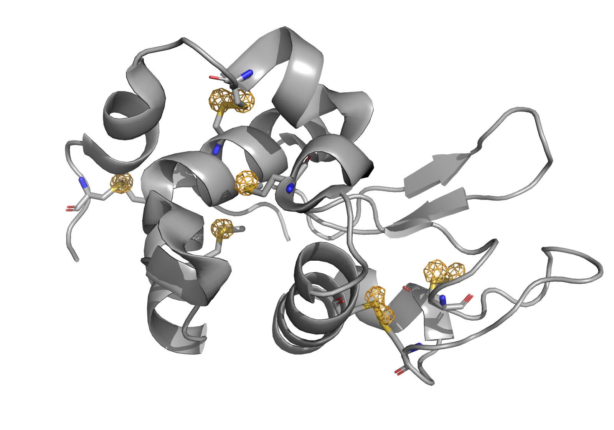

Making an Anomalous Difference Map¶
Note: This section is currently handled in a hacky and imprecise way. This example will be updated in the near future to more properly reflect how to generate an anomalous difference map.
In Getting Started we loaded a room-temperature dataset that was collected at ~6550 eV of tetragonal HEWL. Let’s now use that data to generate an anomalous difference map based on the native anomalous signal from sulfur atoms.
[1]:
import reciprocalspaceship as rs
import numpy as np
[2]:
refltable = rs.read_mtz("data/HEWL_SSAD_24IDC.mtz")
refltable.head()
[2]:
| FreeR_flag | IMEAN | SIGIMEAN | I(+) | SIGI(+) | I(-) | SIGI(-) | N(+) | N(-) | |||
|---|---|---|---|---|---|---|---|---|---|---|---|
| H | K | L | |||||||||
| 0 | 0 | 4 | 14 | 671.0396 | 22.205784 | 671.0396 | 22.205784 | 671.0396 | 22.205784 | 16 | 16 |
| 8 | 4 | 3273.7385 | 107.59589 | 3273.7385 | 107.59589 | 3273.7385 | 107.59589 | 16 | 16 | ||
| 12 | 6 | 1367.5679 | 43.352566 | 1367.5679 | 43.352566 | 1367.5679 | 43.352566 | 16 | 16 | ||
| 16 | 19 | 4158.55 | 198.88382 | 4158.55 | 198.88382 | 4158.55 | 198.88382 | 8 | 8 | ||
| 20 | 8 | 2.4992087 | 5.7103205 | 2.4992087 | 5.7103205 | 2.4992087 | 5.7103205 | 1 | 1 |
[3]:
print(f"Number of reflections: {len(refltable)}")
Number of reflections: 12563
Computing differences¶
In order to compute a difference map, let’s first compute the differences in structure factor amplitude between Friedel pairs. We will do this in the following steps:
Filter out any reflections without observation of both Friedel pairs, or negative intensities
Filter out any centric reflections (Unnecessary)
Convert the observed intensities into structure factor amplitudes
Compute difference in magnitude between Friedel pairs (\(F_{HKL}^+ - F_{HKL}^-\))
[4]:
# 1. Filter out reflections without both Friedel pairs
refltable = refltable.loc[(refltable["N(+)"] > 0) &
(refltable["N(-)"] > 0) &
(refltable["I(+)"] > 0) &
(refltable["I(-)"] > 0)]
[5]:
print(f"Number of reflections: {len(refltable)}")
Number of reflections: 12333
[6]:
# 2. Filter out centric reflections (Unnecessary; but they won't have anomalous signal)
refltable = refltable.loc[~refltable.label_centrics()["CENTRIC"]]
[7]:
print(f"Number of reflections: {len(refltable)}")
Number of reflections: 10328
[8]:
refltable.head()
[8]:
| FreeR_flag | IMEAN | SIGIMEAN | I(+) | SIGI(+) | I(-) | SIGI(-) | N(+) | N(-) | |||
|---|---|---|---|---|---|---|---|---|---|---|---|
| H | K | L | |||||||||
| 2 | 1 | 1 | 0 | 199.67992 | 2.1387444 | 208.31882 | 3.0264542 | 191.06168 | 3.0228317 | 64 | 64 |
| 2 | 13 | 881.6192 | 9.878236 | 845.6465 | 13.966452 | 917.6278 | 13.973421 | 64 | 64 | ||
| 3 | 4 | 423.35788 | 4.799563 | 419.0855 | 6.7865486 | 427.63293 | 6.7886667 | 64 | 64 | ||
| 4 | 15 | 722.5178 | 8.301497 | 685.8678 | 11.732637 | 759.2611 | 11.747558 | 64 | 64 | ||
| 5 | 15 | 1415.0105 | 20.677141 | 1405.6847 | 29.239077 | 1424.34 | 29.24471 | 40 | 40 |
[9]:
# 3. Convert intensities to structure factor amplitudes
refltable["F(+)"] = rs.DataSeries(np.sqrt(refltable["I(+)"].to_numpy()), dtype="SFAmplitudeFriedel").values
refltable["F(-)"] = rs.DataSeries(np.sqrt(refltable["I(-)"].to_numpy()), dtype="SFAmplitudeFriedel").values
refltable["SIGF(+)"] = rs.DataSeries(np.sqrt(refltable["SIGI(+)"].to_numpy()), dtype="StddevSFFriedel").values
refltable["SIGF(-)"] = rs.DataSeries(np.sqrt(refltable["SIGI(-)"].to_numpy()), dtype="StddevSFFriedel").values
[10]:
# 4. Compute differences
dF = refltable["F(+)"].to_numpy() - refltable["F(-)"].to_numpy()
sigDF = np.sqrt(refltable["SIGF(+)"].to_numpy()**2 + refltable["SIGF(-)"].to_numpy()**2)
refltable["dF"] = rs.DataSeries(dF, name="dF", dtype="SFAmplitude").values
refltable["SigDF"] = rs.DataSeries(sigDF, name="SigDF", dtype="Stddev").values
[11]:
# Drop extraneous columns
refltable = refltable[["F(+)", "SIGF(+)", "F(-)", "SIGF(-)", "dF", "SigDF"]]
refltable.head()
[11]:
| F(+) | SIGF(+) | F(-) | SIGF(-) | dF | SigDF | |||
|---|---|---|---|---|---|---|---|---|
| H | K | L | ||||||
| 2 | 1 | 1 | 14.433254 | 1.7396708 | 13.822506 | 1.7386292 | 0.6107483 | 2.4595296 |
| 2 | 29.080002 | 3.7371716 | 30.292372 | 3.7381039 | -1.2123699 | 5.285818 | ||
| 3 | 20.471579 | 2.6051004 | 20.679287 | 2.605507 | -0.20770836 | 3.6844559 | ||
| 4 | 26.189077 | 3.4252937 | 27.554693 | 3.427471 | -1.3656158 | 4.8456364 | ||
| 5 | 37.492462 | 5.407317 | 37.74043 | 5.407838 | -0.24796677 | 7.6474695 |
Let’s plot the signal-to-noise of the observed anomalous difference signal
[12]:
%matplotlib inline
import matplotlib.pyplot as plt
[13]:
plt.figure(figsize=(9, 6))
plt.plot(refltable.dF.values, np.abs(refltable.dF.values)/refltable.SigDF.values, "k.", alpha=0.3)
plt.xlim(-refltable.dF.abs().max(), refltable.dF.abs().max())
plt.xlabel(r"$F_{hkl}^{+} - F_{hkl}^{-}$")
plt.ylabel(r"$\frac{|F_{hkl}^{+} - F_{hkl}^{-}|}{\sigma_{dF}}$")
plt.show()
Obtaining Phases by Isomorphous Replacement¶
In order to turn these anomalous differences into a map, we need to get phases. We will do that by isomorphous replacement with a published structure, 1VAT. Phases were generated from the PDB model using fmodel, and then we will compute the necessary phase shifts in order to go from the conventional structure factor phases to phases associated with the anomalous scattering contributions.
[14]:
ref = rs.read_mtz("data/1VAT_fmodel.mtz")
[15]:
ref.head()
[15]:
| FMODEL | PHIFMODEL | |||
|---|---|---|---|---|
| H | K | L | ||
| 0 | 0 | 4 | 954.69275 | 180.0 |
| 8 | 1030.4215 | -7.802343e-16 | ||
| 12 | 754.23175 | 4.4153507e-15 | ||
| 16 | 533.2781 | 0.0 | ||
| 20 | 5.3535447 | 0.0 |
[16]:
ref.dtypes
[16]:
FMODEL SFAmplitude
PHIFMODEL Phase
dtype: object
[17]:
# Find common HKL indices
hkls = refltable.index.intersection(ref.index)
hkls = hkls.sort_values()
refltable = refltable.loc[hkls]
ref = ref.loc[hkls]
[18]:
print(f"Number of reflections: {len(refltable)}, {len(refltable)}")
Number of reflections: 10328, 10328
[19]:
# This accounts for the phase shifts between the computed phases and the desired anomalous phases
refltable["PHANOM"] = ref["PHIFMODEL"]
refltable["PHANOM"] = refltable.apply(lambda x: x["PHANOM"] if x["dF"] < 0 else 180+x["PHANOM"], axis=1)
refltable["PHANOM"] += 90
refltable["PHANOM"] = rs.utils.canonicalize_phases(refltable["PHANOM"].astype("Phase"))
# Using the convention above for the phase shift, we need to take the |Fanom|
refltable["ANOM"] = np.abs(refltable["dF"]).astype("SFAmplitude")/2
[20]:
refltable.write_mtz("data/anomdiff.mtz")
Looking at the map on the 1VAT structure, we can see difference density on all of the sulfurs in HEWL. Here is an image of this density contoured at +5\(\sigma\):
